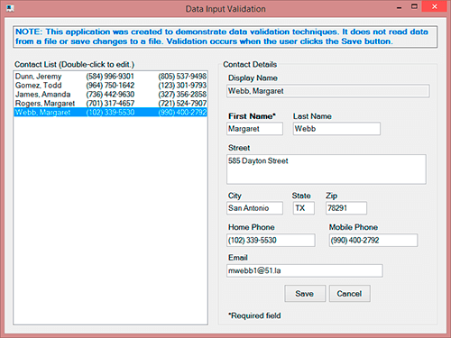
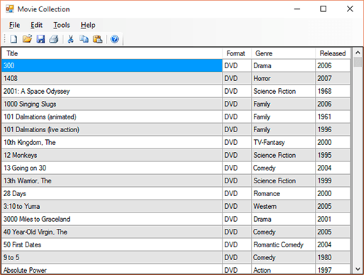
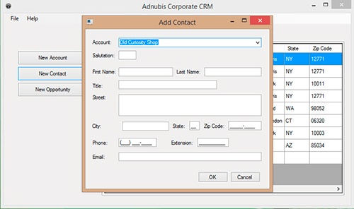
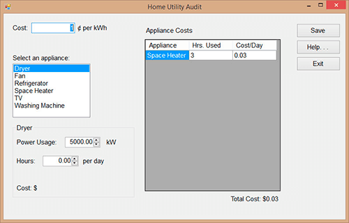
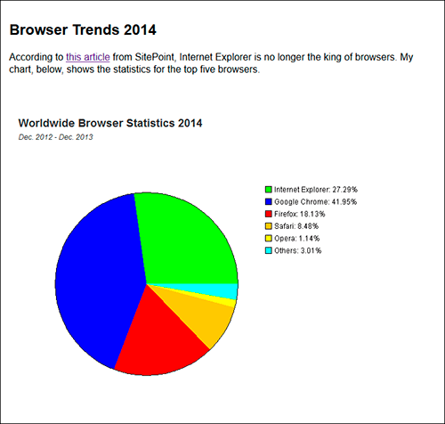

Application Development
I have written many applications over the years. I won't bore you with all of the details but I will tell you about some of the highlights. If the source code for the project is available in GitHub, I have included a link to the repository.
Windows Programming
| Project Title | Description |
|---|---|
| IS Contacts | A WPF application that was created as a learning exercise. The program uses WPF data binding and WPF styles, templates, and triggers. |
| Movies | This WPF application is based on the File Example that I created while taking my last course, .NET II. I am refactoring the application to use MVVM and, ultimately, store the data in a database. |
| Tipster | This is an extremely simple application. It includes WPF styles, but has no data storage features and uses event handling rather than WPF commands. The program calculates the tip, total meal bill, and cost per person given the meal total, the tip percentage and the number of diners. The code for this example is available on my GitHub account under IS_CSharp_Examples in the Tipster folder.  |
| Data Validation Example | Created for POS/409, .NET II, C# - This program performs data entry validation using regular expressions. The sample data was obtained from a data mocking service. Here is a screenshot:  |
| File I/O Example |
Created for POS/409, .NET II, C#. This program was written to show simple file handling. It loads and parses a text file into a list of movies. The data for each movie includes the title, the format (DVD or Blu-ray), the genre, and the year it was released. The program is stupid. In other words, the file name is hard-wired and although you can edit existing movies, there is no facility to add new movies or delete existing ones. I originally intended to finish it but ended up creating a WPF version instead. The code for this example is available on my GitHub account under IS_CSharp_Examples in the FileExample folder.  |
| Customer Relationship Management | Created for POS/408, .NET I, Visual Basic. This was a team project. I did most of the interface design for this project. Source code for this was not uploaded to GitHub because it is not all mine. Below is a screenshot.  |
| Home Utility Audit | Technologies used: Visual Basic .NET, Windows Forms. This application was created for POS/408, .NET I, Visual Basic. Here is a screenshot:  |
| PieChart Applet | Created for PRG/421, Java Programming II. Although it seemed sort of a waste of time to create a Java applet at this point when Java is disabled in most people's browsers, but this is it. The only truly interesting thing about it is that the code for the applet draws the pie chart on the fly, calculating and drawing the chart when it runs.  |
Tools Development
I was at Medidata Solutions for a bit over five years. During that time, I developed several applications for use by the Technical Communications Department, and one application that was used company-wide. I spent about half of my time on development projects. Here are the highlights.
| Project Title | Description |
|---|---|
| Global Glossary | Created for Medidata Solutions, this is the application (or set of applications) that
allowed me to create a new title for myself. The Global Glossary is actually two applications:
|
| Charlotte | Charlotte was also created for Medidata Solutions. This program also had two parts, a Windows Forms application that was used to extract documentation comments from a project and save the results in XML format. The program was able to work with C#, Java, and Ruby on Rails projects. The second part of the project is a Microsoft Word add-in that loads the XML file and inserts the data into a Design Specification with tables for UI pages/web forms, classes, and database objects. |
| Reaper | Ok, so I have the geek's love of "clever" program names. This application was a C# desktop application that we used to make sure the developers are adding documentation comments to their code. It can check a project, including the stored procedures. It counts the objects and then generates an HTML report that lists the total number of objects that require comments compared to the actual number of comments and the percentage of coverage. |
| KIDA (Known Issues Document Administration) | A web application that allows the Technical Communications team to edit the list of known issues for the creation of a customer-facing Known Issues document. Issues that have been added since the last document update are extracted from the bug tracker application and added to the database. Then a Technical Communicator edits the description and adds any work-arounds or other information to the issue. |
| Known Issues Document | A Microsoft Word document that creates an updated version of the Known Issues list for Medidata Rave. The application extracts issue information from a central database and then creates a Microsoft Word document with two sections, one for unresolved issues and another for the issues that have been resolved. |
| Known Issues Spreadsheet | This is similar to the previous entry but creates a Microsoft Excel workbook instead of a Microsoft Word document. The workbook had two sheets, one for unresolved issues and one for resolved issues. The advantage of a workbook over a document is that the data could be sorted easily by column and/or filtered to show a specific type of issues. The Excel workbook |